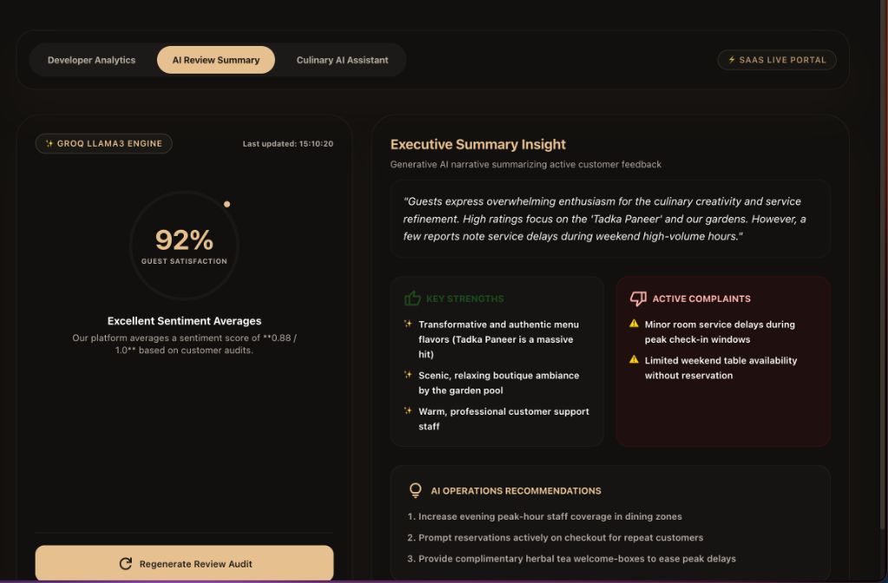
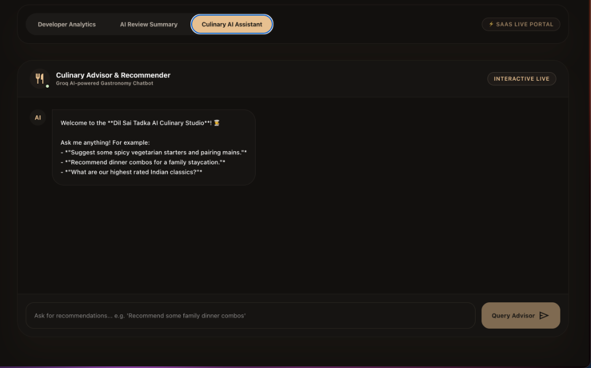

The Dil Sai Tadka platform integrates the Groq Llama 3 AI model (specifically llama3-8b-8192) to offer two core intelligent capabilities:
Both tools leverage pre-designed system prompts to ensure outputs are concise and appropriate for hotel-restaurant operations.
The **AI Review Summary** tab extracts real-time feedback insights to assist hotel management in evaluating operational quality.

0.88 out of 1.0 maps to 92% approval).When triggered, `AIInsightsService` aggregates all reviews and complaints into a structured JSON string. This JSON is injected into the LLM system prompt context. The prompt instructs the model to return a structured JSON response, which is then parsed by the backend to isolate metrics and save them to the `ai_insights` table in PostgreSQL.
The **Culinary AI Assistant** sub-tab provides a chat window where customers or staff can query gastronomy advice.

The generative AI pipeline follows a linear data execution path as outlined below:
ai_insights table to ensure instant reload speeds.Pulls data, serializes JSON contexts, calls the Groq service, and saves parsed insights to the database.
@Service @RequiredArgsConstructor public class AIInsightsService { private final ReviewRepository reviewRepository; private final ComplaintRepository complaintRepository; private final AiInsightRepository aiInsightRepository; private final GroqService groqService; private final ObjectMapper objectMapper = new ObjectMapper(); public AiInsight generateAndSaveFeedbackSummary() { var reviews = reviewRepository.findAll(); var complaints = complaintRepository.findAll(); List<Map<String, Object>> reviewsData = reviews.stream() .map(r -> Map.of("type", "Review", "rating", r.getRating(), "text", r.getText())) .collect(Collectors.toList()); Map<String, Object> inputData = Map.of("reviews", reviewsData, "complaints", complaints); String jsonContext = objectMapper.writeValueAsString(inputData); String prompt = PromptTemplates.getReviewSummaryPrompt(jsonContext); String response = groqService.callGroq(prompt); double sentimentScore = 0.85; try { String cleanedResponse = cleanMarkdown(response); Map responseMap = objectMapper.readValue(cleanedResponse, Map.class); sentimentScore = Double.parseDouble(responseMap.get("sentimentScore").toString()); response = cleanedResponse; } catch (Exception e) { } AiInsight insight = AiInsight.builder() .insightType(AiInsight.InsightType.FEEDBACK_SUMMARY) .content(response) .sentimentScore(sentimentScore) .build(); return aiInsightRepository.save(insight); } }
Maps API endpoints to trigger summary updates or execute chatbot queries.
@RestController @RequestMapping("/api/ai") @RequiredArgsConstructor public class AIController { private final AIInsightsService aiInsightsService; private final MenuItemRepository menuItemRepository; private final GroqService groqService; private final ObjectMapper objectMapper = new ObjectMapper(); @PostMapping("/reviews/summarize") public ResponseEntity<AiInsight> triggerFeedbackSummary() { return ResponseEntity.ok(aiInsightsService.generateAndSaveFeedbackSummary()); } @PostMapping("/recommendations") public ResponseEntity<Map<String, String>> getMenuRecommendations(@RequestBody Map<String, String> body) { String query = body.get("query"); var menuItems = menuItemRepository.findAll(); List<Map<String, Object>> menuSummary = menuItems.stream() .filter(m -> m.getActive() != null && m.getActive()) .map(m -> Map.of("name", m.getName(), "price", m.getPrice(), "category", m.getCategory())) .collect(Collectors.toList()); String menuJson = objectMapper.writeValueAsString(menuSummary); String prompt = PromptTemplates.getFoodRecommendationPrompt(menuJson, query); String recommendation = groqService.callGroq(prompt); return ResponseEntity.ok(Map.of("recommendation", recommendation)); } }
Directly connects to Groq using the Llama 3 model, handling bearer keys and falling back cleanly if the key is missing.
@Service public class GroqService { @Value("${app.groq.api-key:NO_KEY}") private String apiKey; private final RestTemplate restTemplate = new RestTemplate(); public String callGroq(String prompt) { if ("NO_KEY".equals(apiKey) || apiKey.trim().isEmpty()) { return generateFallbackResponse(prompt); } HttpHeaders headers = new HttpHeaders(); headers.setContentType(MediaType.APPLICATION_JSON); headers.setBearerAuth(apiKey); Map<String, Object> requestBody = Map.of( "model", "llama3-8b-8192", "messages", List.of(Map.of("role", "user", "content", prompt)), "temperature", 0.3 ); ResponseEntity<Map> resp = restTemplate.postForEntity( "https://api.groq.com/openai/v1/chat/completions", new HttpEntity<>(requestBody, headers), Map.class ); List choices = (List) resp.getBody().get("choices"); Map message = (Map) ((Map) choices.get(0)).get("message"); return (String) message.get("content"); } }